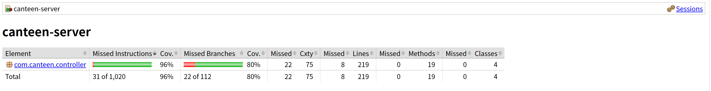

8-1 AI 辅助测试 Prompt 演化实验 -> 8-2 项目级 AGENTS.md -> 8-3 CIVC 自评审计报告
OrderController#createOrder请帮我给 OrderController 写单元测试，覆盖创建订单接口。
success/message。portion 非法、菜品不在明日菜单。UserDAO/DishService 协作分支。你是资深 Java 测试工程师。请为 Spring Boot 的 OrderController 编写 WebMvcTest，
使用 MockMvc + Mockito，不连接数据库。
目标：POST /api/orders（createOrder）
必须覆盖：
1) portion 非 whole/half -> success=false, message=份量须为 whole 或 half
2) dish.menuDate != tomorrow -> success=false, message=该菜品不在明日可订菜单中
3) submitOrder=true -> success=true, message=订单创建成功，且返回 orderId
约束：
- 每个用例必须断言 success 和 message
- 失败分支需要 verify(..., never()) 证明未误调用写操作
- 按如下风格输出：
andExpect(jsonPath("$.success").value(false))
andExpect(jsonPath("$.message").value("xxx"))
package com.canteen.controller;
import com.canteen.dao.UserDAO;
import com.canteen.entity.Dish;
import com.canteen.entity.Order;
import com.canteen.entity.User;
import com.canteen.service.DishService;
import com.canteen.service.OrderService;
import com.canteen.service.ReportService;
import org.junit.jupiter.api.Test;
import org.springframework.beans.factory.annotation.Autowired;
import org.springframework.boot.test.autoconfigure.web.servlet.WebMvcTest;
import org.springframework.boot.test.mock.mockito.MockBean;
import org.springframework.http.MediaType;
import org.springframework.test.web.servlet.MockMvc;
import static org.mockito.ArgumentMatchers.any;
import static org.mockito.Mockito.never;
import static org.mockito.Mockito.verify;
import static org.mockito.Mockito.when;
import static org.springframework.test.web.servlet.request.MockMvcRequestBuilders.post;
import static org.springframework.test.web.servlet.result.MockMvcResultMatchers.jsonPath;
import static org.springframework.test.web.servlet.result.MockMvcResultMatchers.status;
@WebMvcTest(OrderController.class)
class OrderControllerMockTest {
@Autowired
private MockMvc mockMvc;
@MockBean
private OrderService orderService;
@MockBean
private ReportService reportService;
@MockBean
private DishService dishService;
@MockBean
private UserDAO userDAO;
@Test
void createOrder_shouldRejectWhenPortionInvalid() throws Exception {
User student = new User("stu1", "123", "student", "张三");
when(userDAO.findByUsername("stu1")).thenReturn(student);
mockMvc.perform(post("/api/orders")
.contentType(MediaType.APPLICATION_JSON)
.content("""
{"username":"stu1","dishId":"D001","portion":"quarter"}
"""))
.andExpect(status().isOk())
.andExpect(jsonPath("$.success").value(false))
.andExpect(jsonPath("$.message").value("份量须为 whole 或 half"));
verify(dishService, never()).getDishById(any());
verify(orderService, never()).submitOrder(any());
}
@Test
void createOrder_shouldRejectWhenDishNotInTomorrowMenu() throws Exception {
User student = new User("stu1", "123", "student", "张三");
Dish dish = new Dish("D001", "红烧肉", 20.0, "desc", "2099-01-01");
when(userDAO.findByUsername("stu1")).thenReturn(student);
when(dishService.getDishById("D001")).thenReturn(dish);
when(orderService.getTomorrowDate()).thenReturn("2099-01-02");
mockMvc.perform(post("/api/orders")
.contentType(MediaType.APPLICATION_JSON)
.content("""
{"username":"stu1","dishId":"D001","portion":"whole"}
"""))
.andExpect(status().isOk())
.andExpect(jsonPath("$.success").value(false))
.andExpect(jsonPath("$.message").value("该菜品不在明日可订菜单中"));
verify(orderService, never()).submitOrder(any());
}
@Test
void createOrder_shouldReturnSuccessWhenSubmitSucceeded() throws Exception {
User student = new User("stu1", "123", "student", "张三");
Dish dish = new Dish("D001", "红烧肉", 20.0, "desc", "2099-01-02");
Order order = new Order();
order.setOrderId("O1001");
order.setUsername("stu1");
when(userDAO.findByUsername("stu1")).thenReturn(student);
when(dishService.getDishById("D001")).thenReturn(dish);
when(orderService.getTomorrowDate()).thenReturn("2099-01-02");
when(orderService.createOrder(student, dish, "whole")).thenReturn(order);
when(orderService.submitOrder(order)).thenReturn(true);
mockMvc.perform(post("/api/orders")
.contentType(MediaType.APPLICATION_JSON)
.content("""
{"username":"stu1","dishId":"D001","portion":"whole"}
"""))
.andExpect(status().isOk())
.andExpect(jsonPath("$.success").value(true))
.andExpect(jsonPath("$.message").value("订单创建成功"))
.andExpect(jsonPath("$.order.orderId").value("O1001"));
}
}
AdminDishController#save/#delete给管理员菜品接口写几个测试。
menuDate 非法格式、负价格、空字段。你扮演“代码评审 + 测试设计师”。
先按分支清单设计，再输出最终测试代码（不输出思维链）。
模块：AdminDishController（WebMvcTest + MockBean）
必须覆盖：
Step1 非 admin 查询列表失败：message=无权限管理菜品
Step2 save 入参校验：menuDate 非 yyyy-MM-dd 失败
Step3 save 数据清洗：id/name/menuDate trim，description null -> ""
Step4 delete 业务约束：countByDishId > 0 时失败
Step5 delete 成功分支：success=true
规则：
- 每个测试断言 success + message（或关键字段）
- 至少一个失败分支断言 never()
package com.canteen.controller;
import com.canteen.dao.OrderDAO;
import com.canteen.dao.UserDAO;
import com.canteen.entity.Dish;
import com.canteen.entity.User;
import com.canteen.service.DishService;
import org.junit.jupiter.api.Test;
import org.springframework.beans.factory.annotation.Autowired;
import org.springframework.boot.test.autoconfigure.web.servlet.WebMvcTest;
import org.springframework.boot.test.mock.mockito.MockBean;
import org.springframework.http.MediaType;
import org.springframework.test.web.servlet.MockMvc;
import static org.mockito.ArgumentMatchers.any;
import static org.mockito.Mockito.never;
import static org.mockito.Mockito.verify;
import static org.mockito.Mockito.when;
import static org.springframework.test.web.servlet.request.MockMvcRequestBuilders.delete;
import static org.springframework.test.web.servlet.request.MockMvcRequestBuilders.get;
import static org.springframework.test.web.servlet.request.MockMvcRequestBuilders.post;
import static org.springframework.test.web.servlet.result.MockMvcResultMatchers.jsonPath;
import static org.springframework.test.web.servlet.result.MockMvcResultMatchers.status;
@WebMvcTest(AdminDishController.class)
class AdminDishControllerMockTest {
@Autowired
private MockMvc mockMvc;
@MockBean
private UserDAO userDAO;
@MockBean
private DishService dishService;
@MockBean
private OrderDAO orderDAO;
@Test
void list_shouldRejectWhenNotAdmin() throws Exception {
when(userDAO.findByUsername("stu1")).thenReturn(new User("stu1", "123", "student", "张三"));
mockMvc.perform(get("/api/admin/dishes").param("username", "stu1"))
.andExpect(status().isOk())
.andExpect(jsonPath("$.success").value(false))
.andExpect(jsonPath("$.message").value("无权限管理菜品"));
verify(dishService, never()).getAllDishes();
}
@Test
void save_shouldRejectWhenDateInvalid() throws Exception {
when(userDAO.findByUsername("admin")).thenReturn(new User("admin", "123", "admin", "管理员"));
mockMvc.perform(post("/api/admin/dishes")
.param("username", "admin")
.contentType(MediaType.APPLICATION_JSON)
.content("""
{"id":"D001","name":"鱼香肉丝","price":18.5,"description":"desc","menuDate":"2099/01/02"}
"""))
.andExpect(status().isOk())
.andExpect(jsonPath("$.success").value(false))
.andExpect(jsonPath("$.message").value("供餐日须为 yyyy-MM-dd 格式"));
verify(dishService, never()).saveDish(any());
}
@Test
void save_shouldTrimFieldsAndSucceed() throws Exception {
when(userDAO.findByUsername("admin")).thenReturn(new User("admin", "123", "admin", "管理员"));
when(dishService.saveDish(any(Dish.class))).thenReturn(true);
mockMvc.perform(post("/api/admin/dishes")
.param("username", "admin")
.contentType(MediaType.APPLICATION_JSON)
.content("""
{"id":" D002 ","name":" 糖醋里脊 ","price":20.0,"description":null,"menuDate":" 2099-01-03 "}
"""))
.andExpect(status().isOk())
.andExpect(jsonPath("$.success").value(true))
.andExpect(jsonPath("$.message").value("保存成功"))
.andExpect(jsonPath("$.dish.id").value("D002"))
.andExpect(jsonPath("$.dish.name").value("糖醋里脊"))
.andExpect(jsonPath("$.dish.menuDate").value("2099-01-03"))
.andExpect(jsonPath("$.dish.description").value(""));
}
@Test
void delete_shouldRejectWhenDishHasOrders() throws Exception {
when(userDAO.findByUsername("admin")).thenReturn(new User("admin", "123", "admin", "管理员"));
when(orderDAO.countByDishId("D003")).thenReturn(2);
mockMvc.perform(delete("/api/admin/dishes/D003")
.param("username", "admin"))
.andExpect(status().isOk())
.andExpect(jsonPath("$.success").value(false))
.andExpect(jsonPath("$.message").value("该菜品已有 2 条关联订单，无法删除。可修改供餐日或保留记录。"));
verify(dishService, never()).deleteDishById(any());
}
@Test
void delete_shouldReturnSuccessWhenRemoved() throws Exception {
when(userDAO.findByUsername("admin")).thenReturn(new User("admin", "123", "admin", "管理员"));
when(orderDAO.countByDishId("D004")).thenReturn(0);
when(dishService.deleteDishById("D004")).thenReturn(true);
mockMvc.perform(delete("/api/admin/dishes/D004")
.param("username", "admin"))
.andExpect(status().isOk())
.andExpect(jsonPath("$.success").value(true))
.andExpect(jsonPath("$.message").value("已删除"));
}
}
canteen-server/target/site/jacoco/index.htmlcom.canteen.controller）：Lines 96%，Branches 80%
frontend(Vue3) + canteen-server(Spring Boot 3 + MyBatis)。controller -> service -> dao -> mapper/sql，禁止跨层直连。Mock 单测（控制层 WebMvcTest，业务层 Mockito）。/api/** 接口，不直接访问数据库。frontend/: Vue3 前端工程canteen-server/src/main/java/com/canteen/controller: API 控制层canteen-server/src/main/java/com/canteen/service: 业务逻辑层canteen-server/src/main/java/com/canteen/dao: MyBatis DAO 接口canteen-server/src/main/java/com/canteen/entity: 实体模型canteen-server/src/main/resources/mappers: MyBatis XMLcanteen-server/src/test/java/com/canteen: 后端单元测试docs/: 课程报告、实验文档、截图证据LoginController/LoginService: 用户登录鉴权，返回用户角色(student/admin)。DishController/DishService: 学生侧“明日菜单”查询。OrderController/OrderService: 下单、个人订单、取消明日订单、份量更新。AdminDishController: 管理员菜品增删改查，删除前做订单关联检查。ReportService: 管理端统计报表（人数、订单量、菜品需求量）。Map<String, Object> + success/message/... 字段。@WebMvcTest + @MockBean + MockMvcMockitoExtension + mock DAOtarget/ 产物，不把构建产物当源码维护。.env 等敏感信息。reset --hard、强推）处理常规任务。success/message/data）？canteen-server 测试是否通过，覆盖率是否满足当前任务要求？canteen-sysREADME.md、AGENTS.md、现有测试与覆盖率流程Constraint：中等偏弱（可读写范围较大，缺少硬沙盒）Information：中等偏强（已有项目级上下文文档）Verification：较强（自动化测试 + 覆盖率门槛已落地）Correction：中等偏弱（有 Git 可回退，但缺少“一键回滚”标准机制）frontend/、canteen-server/、docs/）。AGENTS.md（分层规范、禁止操作、测试优先）。src/**、禁止改 main 受保护文件）。target/）可能被误纳入版本管理。feat/ai-* 分支完成，禁止在主分支直改。canteen-server/src/** 与 docs/**）。target/**、密钥文件、数据库凭据。application.properties、db.sql 采用“必须人工确认”策略。README.md：架构、目录、模块职责、运行方式、CI 说明。AGENTS.md：渐进式披露、分层边界、编码规范、禁令清单。AGENTS.md 新增“必须先读文件清单”（README + 核心 Controller + 测试）。docs/api-contract.md，统一字段与错误文案。docs/business-rules.md，沉淀“仅可取消明日订单”等硬规则。canteen-server/src/test/java/**。com.canteen.controller）覆盖率门槛 LINE >= 80%。Lines 96%、Branches 80%（截图：docs/images/coverage-core-api-8-1.png）。mvn clean test 自动触发测试 + 覆盖率检查。mvn clean test 与覆盖率检查才可合并。success/message/data 字段兼容性。scripts/rollback-last-change.(ps1|sh)，回退最近一次 AI 提交并打印影响文件。执行以上改进后，项目将从“可用的 AI 协作”提升为“可控、可证、可恢复的 AI 协作”。